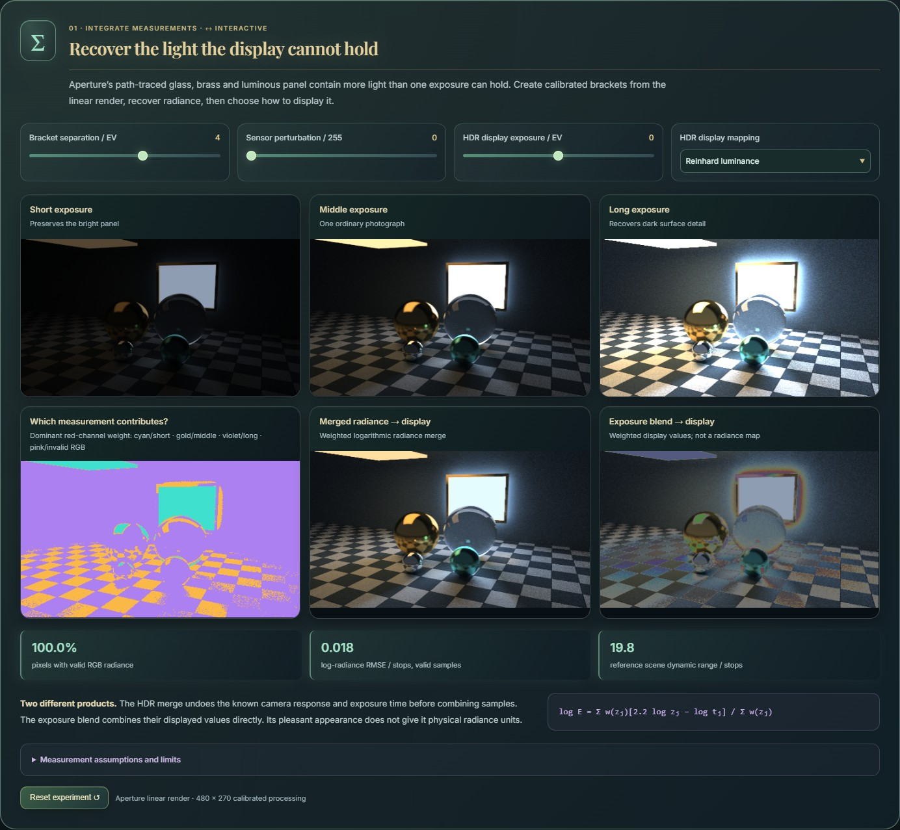
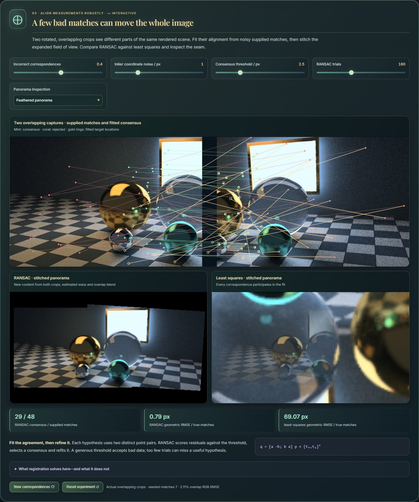
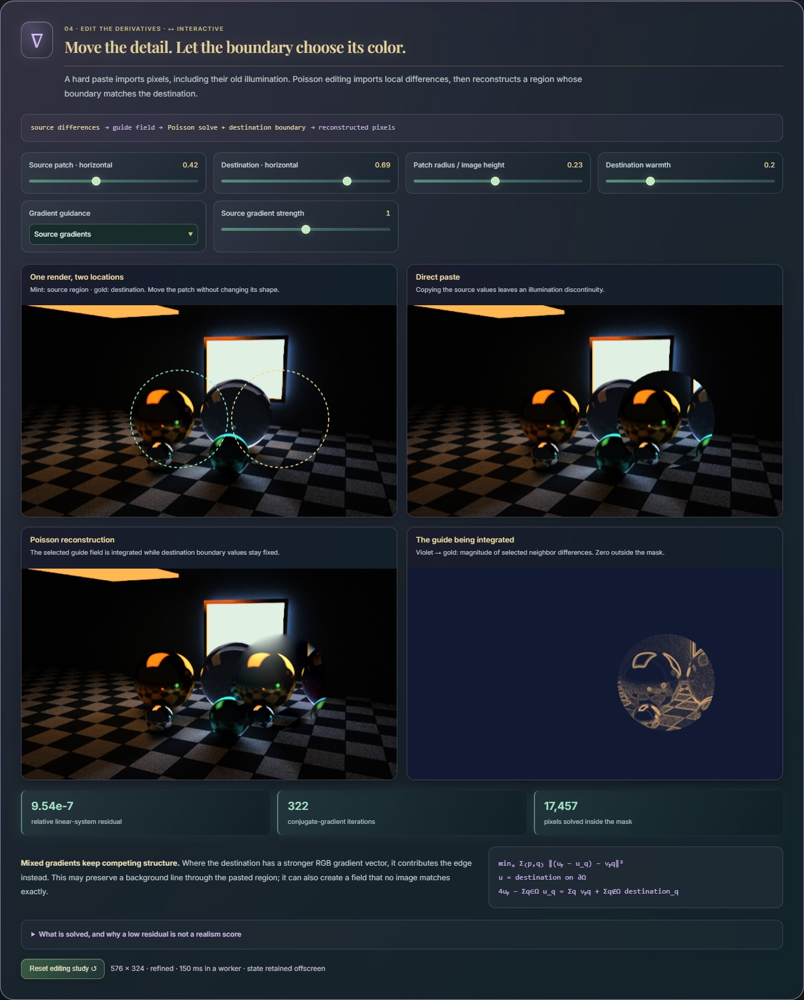

Interactive application
Interactive
Overview · selected highlights
Computational photography
Treat photographs as measurements and change the representation before reconstructing them. Explore bilateral grids, geometric voting, robust stitching, calibrated HDR merging, gradient and frequency editing, and refocusing a rendered camera array using its images alone.
CaptureAlignReconstruct
- ▧
Collect the evidence
Start with images, exposures, correspondences or calibrated camera-array views.
- F
Change representation
Lift pixels into grids, gradients, frequency coefficients or ray space.
- Σ
Edit or combine
Filter, solve, align or integrate the information in that representation.
- Δ
Reconstruct and inspect
Compare the output with residuals and intermediate data.
The intermediate representation explains what an image operation can preserve, reveal or lose.


